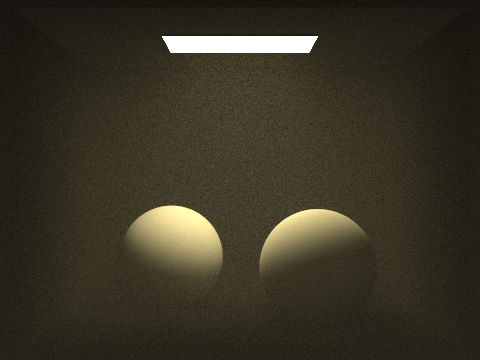

Volumetric scattering is a really interesting effect. I actually worked on implementing a pathtracer previously; you can check out that project page here. In the simplest forms of forward pathtracing, we treat any non-scene element as empty space, that is to say, aside from the actual geometry of the scene, there is nothing for our rays to intersect. This gives very clean pure renders however, there are definitely limitations. The issue with this model is that realistically, the medium through which light moves it decidedly not empty. There can be dust, or water vapor, or realistically any number of suspended particulate matter, and light can interact with the vast majority of these particles. In fact, sometimes it is just these interactions with the medium through which the light propagates which induce some extremely beautiful effects. Thus, our old "empty space" model of pathtracing is limited in its ability to render scenes with media with which the light interacts, or in computer graphics terminology, participating media. Such effects as fog, god rays, smoke and many others can all be rendered using the conception of participating media, and that is the focus of this project.
Let's briefly investigate the participating media theory, namely what really occurs when light can interact with the media in which it travels.
When a light ray interacts with a particle in the participating media, it isn't immediately clear what the light ray should do. There are a few possibilities to highlight here. The light could be absorbed by the particle, in which case, the path being currently traced is stopped upon absorption. Of course, different media will have different propensities to absorb light, so we can describe the probability of light absorption with the numerical quantity , often termed, the absorption coefficient. Another possibility is the light could be outscattered, in which case the light would be scattered to any number of media particles or scene elements. Just like absorption, the likelihood that a media particle scatters light is similarly media dependent, and thus we have a corresponding numerical quantity , which marks the probability of light outscattering, correspondingly termed, the scattering coefficient. The sum of these two coefficients yields the extinction coefficient . If you think about it, the name is a pretty apt description; if you imagine a quantity of light moving through a scene through a specified path, light absorption and light scattering would both serve to decrease the radiance, hence, these two events contribute to the extinction of the light.
Light can also be contributed to a path. For instance, light could be emitted from a media particle, given the particle was sufficiently energetic and converted this energy to visible light. On the other hand light could be inscattered, such that light arrives from a direct lighting source, such as a scene light, or from other particulate-light media interactions. After all, conservation of energy tells us that the outscattered light described above can't simply disappear. I'm not particularly interested in emitted light here, since my goal is to render a "homogenous fog" type of participating media, so we can eschew the details of particulate light emission for now.
Taking into account emitted, absorbed, and both types of light scattering, we're left with a relatively complex model of how light will interact with a participating media. You can use these basic principles to derive the volume rendering equation, which is done really intuitively in this dissertation. The good news here is that we've arrived at a full fledged volumetric rendering system, which in theory can allow us to render a great deal of participating media based effects. The bad news is that this updated rendering equation is intractably complex to solve, and there's really no hope of efficiently simulating participating media effects this way. Thus we need to turn to stochastic simulation with some simplifications.
The following set of assumptions are taken directly from the dissertation linked above, and are hugely relevant for rendering participating media without breaking our computation limitations. The first key assumption, and something we've been understanding implicitly for the initial discussion of participating media is that really, participating media is just a fancy term for a bunch of small particulate matter uniformly randomly dispersed through a vacuum. This is how we can avoid having to model each particle as a scene element and simulating against the many million media particles in each pass of the volume rendering algorithm. We don't really need to think about singular particles in the medium, rather we can turn to how the media will act as a whole. The second important simplification we make is that we can safely say that the medium is sparse, which is to say, there's a lot of empty space. This makes things significantly easier since this allows us to treat path-media computations as probabilistically independent, in other words, intersecting particle A does not in any way alter the probability that the light beam will intersect particle B.
We'll need one more instrument for our volumetric scattering model. After a photon intersects a media particle, how can we decide which direction we should back scatter through. Similar to BRDFs for scene element intersection, we can use phase functions to determine in some sense the probability weighted total radiance that is scattered to direction from direction . For my implementation, I used the Henyey-Greenstein phase function to render my scenes, although numerous guides indicate that Schlick's approximation is perfectly valid, and markedly cheaper to compute. Luckily my scenes weren't large enough to really suffer significantly from the fractional exponent computation which drags the Henyey-Greenstein function down speed-wise.
My implementation closely mirrors the algorithms described by Lafortune and Williams, the PBRT volumetric scattering guide, and the following implementation post. I describe in depth the algorithm for simple forward pathtracing here, and this method is really a reworking of the basic pathtracing algorithm described.
Let's define a simple version of the full algorithm. Starting from our camera, we shoot
random beams per pixel. For each beam, we'll estimate the global_illumination_with_media, for the given ray. Now usually, we'll
wait to see if we intersect a scene element before casting another beam backwards from that spot, but now, due to our participating media we need to
first see whether our light beam interacts with the media before it has the chance to intersect with a scene element. To do this, we first need to
sample a distance. We know given our extinction coefficient as described above, the likelihood our beam reaches distance
, without intersecting a medium particle is
exactly . Using the inversion method, we can thus sample a distance according to the
following function:
We can think of our sampled distance as the distance our light beam wants to travel unobstructed before hitting a media particle. Given our ray from our camera, if it travels units without hitting a scene element, then we know we have a successful media intersection, otherwise, if a scene element precedes our media particle at distance , instead we have a ray scene intersection.
If we have a ray media intersection, we compute the direct lighting as described below, then add the product of the transmittance and the indirect
lighting, which recursively calls global_illumination_with_media given the newly constructed ray. We'll describe a bit more about
how direct lighting and indirect lighting of media particles is computed below (including how we determine our newly constructed ray).
If instead we have a ray surface intersection, we'll similarly compute the direct lighting then add the product of the transmittance and
the indirect lighting, which as in the case of the ray media intersection, recursively calls global_illumination_with_media given
the newly constructed ray. The direct lighting and indirect lighting algorithms for surface interactions can be found in my simple pathtracing
writeup.
Just like in the case of surface intersections, we have to account for direct lighting of media particles. We'll use importance sampling of the lights to get a back traced direction, compute the probability of selecting that direction using the phase function, then cast a ray back in that direction. If the ray is blocked from the light by a scene element, we're out of luck, no direct lighting will reach the particle. Otherwise, we'll attenuate the product of the sampled radiance and phase function of the sampled direction by the transmittance and scale it by the probability of back scattering in the selected direction and the probability of sampling the light at the sampled direction. You can see the PBRT implementation (which I followed) here.
Unfortunately indirect lighting tends to be the most computationally expensive part of lighting simulations. Fortunately, we already have the basic infrastructure in place from our simple forward pathtracer implementation. After sampling our distance, if we discover we do indeed interact with a media particle on the current camera path, just like in the case of a surface intersection, we can sample a new direction to continue our camera beam's back traced path. Intuitively, this captures the notion of beam inscattering and outscattering (although this is a bit of an oversimplification). Rather than sampling the next path direction using the BRDF of the intersection, we instead turn to the phase function previously defined, in this case, the Henyey-Greenstein phase function. Given the media intersection position, and a sampled direction, we can construct a new ray given these parameters and recurse the entire process and calculate the global illumination with participating media given our new ray. That means we'll repeat the entire process of sampling a distance, determining whether we have a light media or a light surface intersection, and handling these two cases as aforementioned. We'll finally attenuate this global illumination computation by the transmittance which can be computed by following Beer's law.
This basically wraps up our description of the global_illumination_with_media algorithm, which is the driver function that recursively
computes the global illumination of a scene. I glossed over a number of things to avoid providing a really long drawn out explanation of many of the
implementation details in favor of a more intuitive understanding of the algorithm. For instance, the transmittance term is really computed following
Beer's law, and further weighted by the extinction probability and scattering probabilities.
|
|

|
|
Above we can see a comparison between various sampling rates (samples per pixel) during volumetric rendering.
One cool extension to traditional homogenous participating media are participating media with specific properties. One of those that I've always found to be really cool are media that kind of glitter in the light. For reference, you can think of ice particles suspended in fog, or the effect you get when a ton of snow particles are whipping around in the wind. There are a number of ways you can simulate this that I can think of. Since these particles tend to be sparse, you could hypothetically model them as discrete scene elements, each with material properties that properly encapsulated the shimmering effect you were looking for. You could model them, for instance, as conductive microfacet materials, which would certainly help produce the glimmer effect, however even if they were sparse, there would still be conceivably tens of thousands of these particles floating throughout the media, so efficiency wise, this wouldn't be the most impressive model.
The way I mimicked this sort of behavior was by randomly ratcheting up the radiance of media particles in the path from the camera to the light source. To get a nice glimmering effect, I multiplied by a factor randomly chosen between 600 and 1100, which blows up the radiance value for those particles. I do this probabilistically per light-media intersection, and you can tune the probability so that you get the right distribution of glimmering particles to regular particles, but I used something like 1/10000. It isn't the best method aesthetically, but it is just as fast as normal volumetric path tracing, so it works as a basic proof of concept.
|
|
|